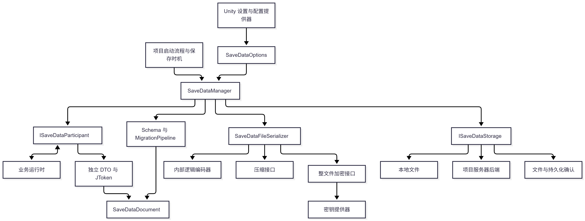
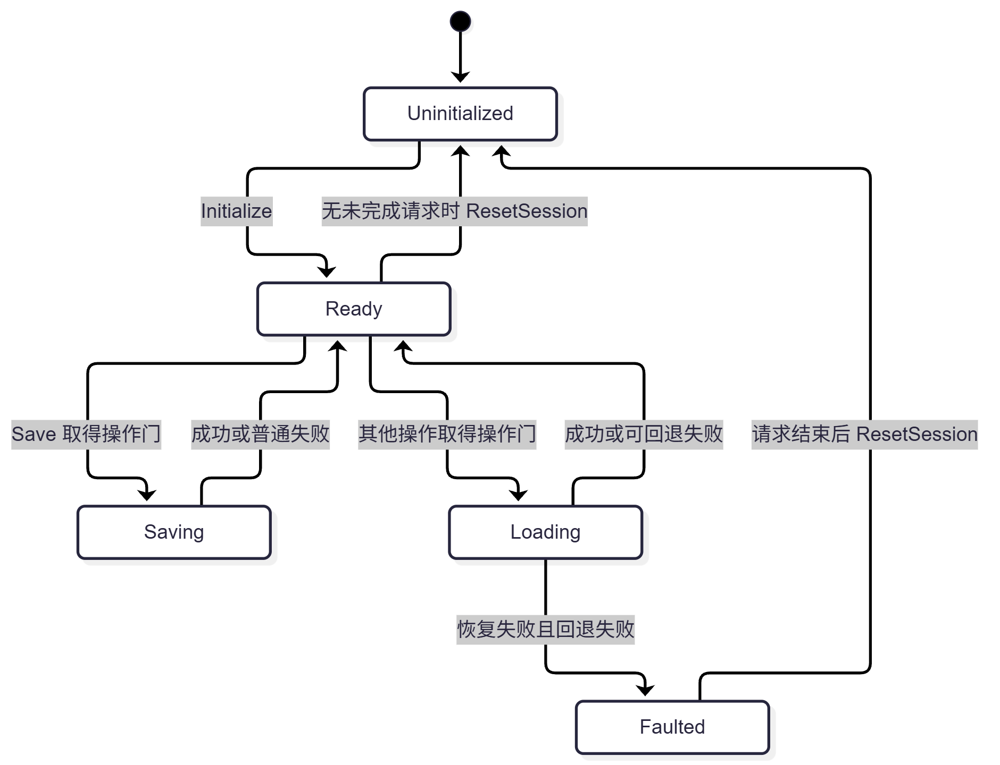
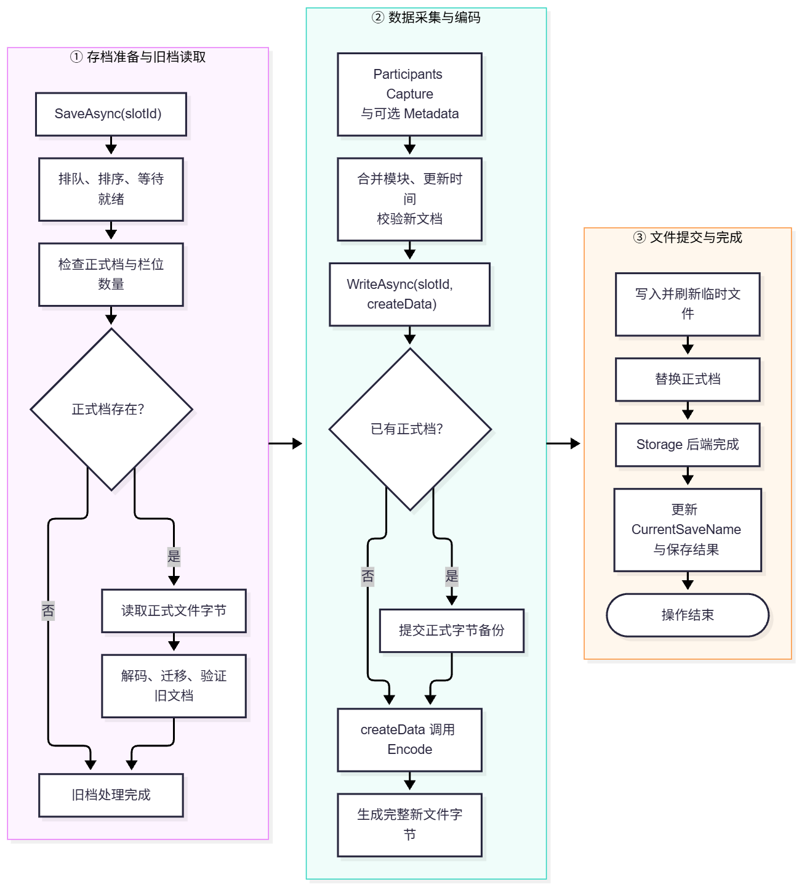
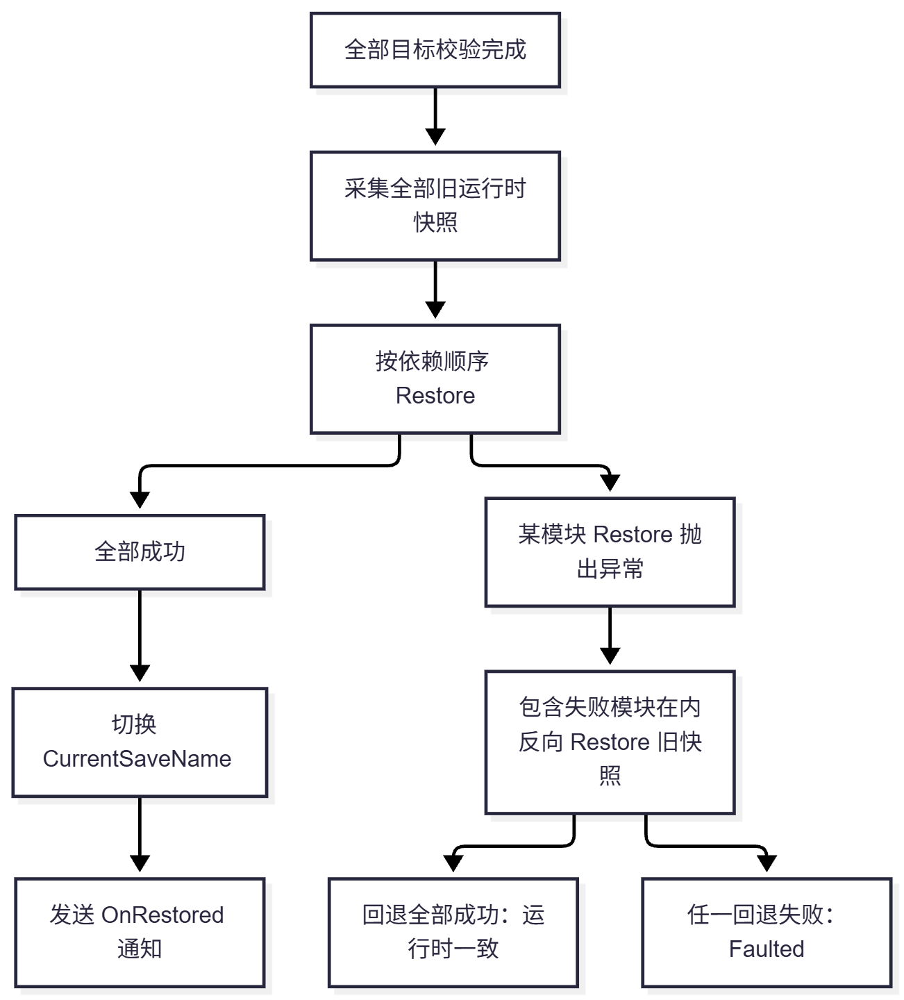
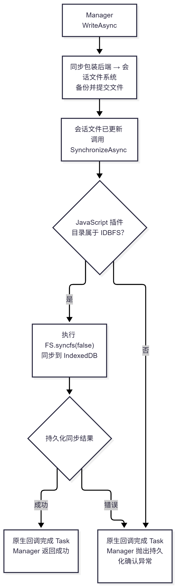
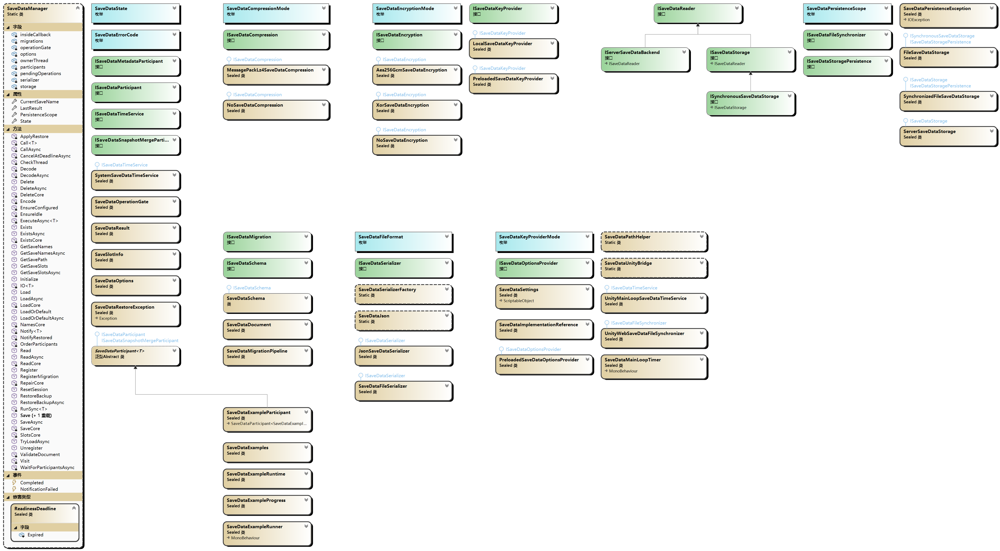

# 观前提醒
项目会在 GitHub 中开源，链接：https://github.com/Maikire/Unity/tree/main/UnityFramework/SaveData
代码较多，所以文章中不放源码
# 存档框架
游戏存档涉及两个相互独立的结果：文件是否已经提交、业务对象是否已经恢复
常见问题包括：资源尚未就绪、多个模块相互依赖、旧字段兼容、版本迁移、坏档、恢复存档、平台持久化差异、压缩、加密
SaveData 将游戏运行时状态转换成独立模块快照，统一处理多栏位读写、默认值、备份、版本迁移、恢复存档、失败回退。业务模块决定保存哪些字段、怎样校验、怎样恢复。项目流程决定何时保存、加载、切换场景、结束会话
# 模块划分与依赖方向

| 目录 | 关键类型 | 职责 |
|---|---|---|
SaveDataFramework/Core | Manager、Options、Participant、Result、OperationGate | 会话生命周期、队列、采集、恢复 |
SaveDataFramework/Schema | Document、Schema、MigrationPipeline | 文档模块、版本迁移 |
SaveDataFramework/Serialization | Json、FileSerializer、SerializerFactory | DTO 策略、编码 |
SaveDataFramework/Compression | NoCompression、MessagePackLz4Compression | 压缩 |
SaveDataFramework/Encryption | NoEncryption、Xor、Aes256Gcm、KeyProvider | 加密 |
SaveDataFramework/Storage | File、Server、SynchronizedFile | 持久化、备份、修复 |
SaveDataFramework/Unity | Settings、Bridge、TimeService、Web 插件 | Unity 路径、设置、平台行为 |
Editor | SettingsWindow、ScriptReferenceEditor、ImplementationLinker | 编辑器配置 |
Integrations/Example | 运行示例 | 运行示例 |
依赖插件： NewtonsoftJson 、 MessagePack 、 BouncyCastle
# 数据
# 运行时、快照、文档、文件
| 层级 | 内容 | 持有和修改 |
|---|---|---|
| 运行时 | 玩家、属性系统、背包等可变状态 | 业务逻辑 |
| 模块快照 | DTO 或 JToken | Participant 采集，Manager 克隆和校验 |
| 逻辑文档 | 所有模块、版本、元信息、扩展字段 | Manager、Schema、迁移管线 |
| 文件字节 | 编码、压缩、封装、加密结果 | Serializer 与 Storage |
# SaveDataDocument
默认文档示例
{ | |
"schemaId": "mygame", | |
"version": 1, | |
"savedAtUtc": "2026-10-14T02:00:00Z", | |
"modules": { | |
"progress": { | |
"coins": 100, | |
"checkpointId": "village" | |
} | |
}, | |
"metadata": {}, | |
"futureRootField": { | |
"enabled": true | |
} | |
} |
| 成员 | 类型 | 语义 |
|---|---|---|
SchemaId | string | 项目数据 ID |
Version | int | 业务结构版本 |
SavedAtUtc | DateTime | 最近保存时间，设置为 UTC |
Modules | Dictionary<string, JToken> | 模块 ID，快照 |
Metadata | JObject | 模块或项目辅助信息 |
Extensions | IDictionary<string, JToken> | JsonExtensionData 接收未知根字段 |
schemaId、version、savedAtUtc、modules、metadata、$saveDataEnvelope 及其大小写变体均为保留字段，不允许扩展字段覆盖。未知根字段保留
# Participant 契约
ISaveDataParticipant 负责 ID、恢复顺序、依赖、就绪、采集、默认值、恢复前校验、恢复。通过 SaveDataParticipant<T> 实现业务方法
EnsureReady() 只检查运行时是否已经准备好， WaitUntilReadyAsync() 只等待项目准备流程。创建角色、初始化资源等属于项目生命周期，不能把这些放到恢复前校验ValidateData() 可验证 DTO 中 ID 是否存在RestoreData() 应完整覆盖模块持久化字段，包括清空旧列表和重置缺省值ValidateCaptureData() 默认复用 ValidateData() ，项目可区分保存与恢复的前置条件
# 调度
# 状态转换

# 异步执行
ExecuteAsync 是核心的异步执行方法，流程摘要如下
创建本次请求独有的 result | |
检查会话、线程、同步上下文、回调重入、栏位与后端 | |
pendingOperations++ | |
等待 FIFO 操作门 | |
再次检查线程和 Faulted | |
设置 Saving 或 Loading | |
按需检查备份能力、排序模块、等待就绪 | |
检查调用方取消 | |
执行本次操作主体 | |
失败时记录异常，必要时 Faulted | |
取得操作门的请求在 finally 中： | |
恢复 Ready 或保持 Faulted | |
更新 LastResult | |
通知 Completed | |
释放操作门 | |
清理已计入的 pendingOperations |
# 操作门
SaveDataOperationGate 管理先进先出操作门，这是 Manager 内部的请求串行机制
操作门由一个 lock、等待链表、授予队列、 TaskCompletionSource<bool> 实现。空闲时立即取得门，忙碌时加入链表末尾。排队取消通过节点移除，已获得门的请求则由自身 finally 释放
当前没有设置 RunContinuationsAsynchronously，允许当前线程或调用方同步上下文继续执行。代码中使用循环通知来避免可能会越来越深的同步调用栈
# 防止重入 Manager
Call() 与 CallAsync() 通过 AsyncLocal<bool> 在同步和异步调用链中标记线程。异步就绪回调未结束时标记仍有效，可以防止回调再发起 Manager 操作并等待自己占用的队列
# 通知
通知发生在释放门之前，因此通知内不能再操作 Manager。项目要触发下一次保存，应在外层等待本次请求返回后再执行
# 模块排序
某些存档模块必须在其他模块完成准备或恢复之后才能执行，例如背包模块需要先恢复物品数据库，任务模块可能需要先恢复背包
OrderParticipants() 检查模块注册情况、初始化排序数据、按优先级遍历、返回最终顺序visiting 递归处理模块依赖、检测循环依赖、生成符合依赖关系的顺序
# 就绪期限
同步入口按顺序调用 EnsureReady() 。异步入口使用一个与调用方 token 链接的就绪取消源，并为全部模块启动一个共同期限，逐个 await WaitUntilReadyAsync()
| 情况 | 结果 |
|---|---|
| 调用方取消 | 传播 OperationCanceledException ，归类为 Cancelled |
| 期限到达且模块响应取消 | 转为 TimeoutException ，归类为 TimedOut |
| TimeService 失败 | 取消模块等待并传播计时失败 |
| 模块忽略取消 | 仍等待模块任务结束，继续占用队列 |
| ReadinessTimeout 非正值 | 不启动期限计时，仅保留调用方取消 |
finally 会取消并等待计时任务，清理本次计时生命周期
默认系统计时使用 SystemSaveDataTimeService 。Web 使用 UnityMainLoopSaveDataTimeService.cs 和 SaveDataMainLoopTimer.cs，使用 Time.realtimeSinceStartupAsDouble ，在 Update 中检查期限
# 线程、取消、会话结束
其他线程在 Unity 主线程初始化，保持 EnforceThreadAffinity = true ，从该线程上的同步上下文调用并 await 异步 API
异步请求进入统一串行队列。一个请求未结束时，可以排队下一项异步操作，但不能初始化新会话、重置会话、注册或注销模块。同步入口只接受空闲的 ISynchronousSaveDataStorage 后端，不能用来阻塞等待服务器或 Web 持久化确认
场景切换或退出会话时，由持有会话的流程执行以下步骤
- 停止接收新请求
- 取消当前会话使用的 CancellationTokenSource
- 等待所有已经发起的请求结束，包括排队请求和提交后的持久化确认
- 注销需要移除的模块，或直接 ResetSession () 结束整个会话
- 销毁模块运行时、卸载场景、释放取消源
# 保存
# 保存流程

已有栏位会先完成读取、迁移、文档校验。错误 Schema、未来版本、损坏文件、错误密钥会使保存失败，框架不会用当前运行时直接覆盖它
不存在的栏位使用模块创建的当前版本空文档。新栏位数量通过 GetSaveNames 与 MaxSlots 检查，已有栏位覆盖不受新增数量限制
每个模块的快照结果先检查深度，再按模块合并策略替换或合并。可选 Metadata 写入 document.Metadata[ParticipantId] 。新文档更新时间信息并经过全局校验后，Storage 才开始写入
标记存档栏位的 CurrentSaveName 描述 Manager 最近成功的操作，只有在 Storage 成功返回后才切换
# 旧档、新档
顺序固定为 备份旧档 -> 编码新档 -> 提交新档。业务采集和文档校验早已完成，回调只访问独立文档和编码服务
若编码失败，旧正式档不会被覆盖，备份可能已经成功更新为旧正式档。不能将这类失败描述成 所有相关文件完全没变，只能说 旧正式数据仍然可用
自定义 Storage 应保持同样顺序，并定义最终提交后的取消和确认语义。直接忽略该回调契约，会改变框架对备份与错误处理的预期
# 加载
# 解码文档
ReadCore 从后端取得完整字节
- 检查字节非空且不超过
MaxBytes - 文件编码器解密、解析内容、解压、内部解码，得到 JObject
- Schema.Decode 将根对象转换为文档，项目可在这里识别旧根结构
- 迁移管线逐级升级
- Manager 进行通用和项目校验
# 恢复前检查
LoadCore 对排序后的每个已注册模块选择目标：文档有模块则深克隆，没有则调用模块 CreateDefault。目标放入独立数组，也写回本次内存文档，以便进行最终文档校验
所有 ValidateRestore(target) 均在提交前执行，再校验完整文档，最后检查调用方取消。无论文档来自文件还是缺档默认分支，都经过同一恢复计划流程
Schema 的 RequiredParticipants 检查注册集合。当前的策略是在缺模块时默认恢复，需要拒绝某些文件缺模块的项目，可在 Schema.Validate 中显式检查
# 恢复

提交前通过所有模块快照建立 previous[] 。如果采集旧快照失败，提交尚未开始，业务状态不会被框架恢复流程修改
提交阶段从前到后调用 Restore。失败后，从抛出异常的那个模块开始反向回退，包含失败模块，因为它可能在抛出前已经部分修改状态。尚未执行 Restore 的模块无需回退
原始恢复异常和回退异常聚合到 SaveDataRestoreException 。只有原始异常时， RuntimeStateConsistent 为 true，增加任意回退异常时为 false，调度器将会话设置为 Faulted
这个机制是对遵守快照契约的业务模块进行补偿恢复。Restore 中发出的网络请求、消耗外部资源、不可撤销的副作用不受旧 DTO 自动回退
# 提交与取消的边界
ApplyRestore 是同步提交阶段，开始前检查 token，逐模块恢复期间不再次取消，避免因半途取消主动留下一组部分恢复的对象。Restore 抛出时仍执行完整回退
成功后切换当前栏位，并调用可选 OnRestored(!loaded) 。 !loaded 表示整份文件缺失走默认分支，这不代表每个模块都使用了默认值
# 兼容
| 层级 | 策略 |
|---|---|
| 未注册模块 | 保存从目标栏位文档开始，保持原模块 |
| 未知根字段 | Document.Extensions 接收并重新输出 |
| 已注册模块内的未知字段 | 依据 Participant 的快照合并策略 |
MergeSnapshot(previous, current, typeof(T)) 保留旧 JObject 中当前未提供的顶层字段，当前提供的对象、字典状对象或数组字段整体替换
例如旧存档
{ | |
"coins": 10, | |
"stats": { | |
"level": 2, | |
"futureStat": 7 | |
}, | |
"inventory": { | |
"potion": 3, | |
"oldSword": 1 | |
}, | |
"futureFlag": true | |
} |
当前 DTO 若将 stats 声明为只认识 level 的普通对象，将 inventory 声明为字典，本次采集得到 coins = 20 、 level = 3 、 potion = 2 ，则合并结果如下
{ | |
"coins": 20, | |
"stats": { | |
"level": 3, | |
"futureStat": 7 | |
}, | |
"inventory": { | |
"potion": 2 | |
}, | |
"futureFlag": true | |
} |
oldSword 会消失， futureStat 与 futureFlag 作为未知对象字段保留
如果类型只是 object ，则合并会整体替换当前提供的 stats ，不会保留其内部 futureStat
需要不同保留策略时，覆盖 MergeSnapshot(previous, current) ，例如返回 current.DeepClone() 实现模块快照整体替换
# Schema 和 相邻版本迁移
默认 Schema 要求非空 ID、当前版本至少为 1
迁移步骤通过 FromVersion 索引。注册要求源版本非负并且低于当前版本
while (文档版本 < 当前版本) | |
查找该版本的迁移步骤，否则失败 | |
Migrate(document) | |
检查步骤没有自行改变 Version 或 SchemaId | |
Version 增加 1 | |
执行当前 Schema.Validate 验证 |
当前版本为 3 的 Schema 可以通过 0 -> 1、1 -> 2、2 -> 3 接受历史版本。默认 Schema 不会识别缺少版本号的旧结构，项目可覆盖 Decode，将旧根对象转换为带版本的文档
Read 和 Load 的迁移不会自动写回文件。Save 读取目标旧档、迁移并采集新数据后，才写出当前业务版本
Schema.Validate 可在独立文档上执行项目规范化。项目应并避免在这里改变业务运行时或启动其他存档请求
迁移只处理已解码的逻辑结构。若当前设置无法解密或解压旧文件，流程在迁移前就会失败
# 编码
保存：逻辑文档 -> 内部编码器 -> 压缩或原样复制 -> 生成完整 JSON 或 Bytes 文件 -> 整文件加密或原样输出 -> 存储字节
读取：按当前配置解密 -> 识别内容 -> 检查压缩状态 -> 当前压缩实现解压 -> 按当前内部编码器解码
可以在框架配置中设置压缩方式和加密方式，压缩和加密都只会按照这个配置进行
# Newtonsoft Json
框架使用 Newtonsoft JSON 做解析
| 配置 | 作用 |
|---|---|
TypeNameHandling.None | 不根据文档中的类型名创建运行时类型 |
MetadataPropertyHandling.Ignore | 按框架策略处理元数据属性 |
ObjectCreationHandling.Replace | DTO 内容整体构造，避免旧集合残留 |
DateParseHandling.None | JToken 读取不自动将字符串转成日期 token |
InvariantCulture | 固定数字等格式语义 |
MaxDepth = 64 | 限制对象与数组嵌套 |
JSON 字节使用 UTF-8。读取时拒绝空文件、无效 UTF-8、重复属性名。根对象必须能读取成 JObject，DTO 的 JSON 异常转换为 InvalidDataException
# 读取格式
ReadFile 检查有 SDBF 标记的二进制内容，否则尝试 JSON 根对象。有包装标记时按压缩 JSON 内容读取，没有包装时使用当前内部编码器。Json 与 Bytes 可以在兼容条件下互读
压缩状态必须与当前配置一致：配置为无压缩时拒绝压缩内容，配置为压缩时拒绝未压缩内容
# 压缩
压缩部分使用 MessagePack 插件，框架内部提供 无压缩 和 LZ4 压缩
ISaveDataCompression 只包含压缩和解压，是可扩展的压缩契约
# LZ4
LZ4 压缩将内部逻辑字节作为 byte[] ，使用 MessagePack 的 Lz4Block 压缩，不会直接反射序列化业务 DTO。Resolver 只返回插件的静态 ByteArrayFormatter.Instance ，不支持其他泛型类型，调用点固定为 Serialize<byte[]> 和 Deserialize<byte[]> ，便于 IL2CPP 静态生成
解压前检查：
- 输入没有超过字节上限，外层声明解压长度没有越界
- MessagePack 内容是单个 Extension
- Extension 后没有尾随内容
- 内部记录的解压长度等于预期
MessagePack byte[]编码长度
内部 byte [] 编码包含 bin8/bin16/bin32 头，其开销分别是 2、3、5 字节，因此内部期望长度不是简单等于 JSON 长度。 PackedLength() 按数组长度计算该开销
无压缩实现也遵守独立缓冲区与长度约束。压缩是否节省空间由数据决定，尤其 JSON 压缩包装会再产生 Base64 开销
# 加密
框架内部提供 无加密、AES-256-GCM、XOR
ISaveDataEncryption 只包含加密和解密，是可扩展的加密契约
框架将完整文件作为 plaintext，传入空的附加认证数据数组，没有解密头
ISaveDataKeyProvider 是可扩展的项目密钥来源
同步读取预加载密钥，网络请求须要在启动流程中异步等待完成，不能在此阻塞
框架清理自己持有的中间明文、压缩缓冲区、密码计算密钥副本，不修改提供器返回的数组。提供器缓存和其外部来源的生命周期由相应实现自己管理
# AES-256-GCM
框架使用 Bouncy Castle 的 AesEngine、GcmBlockCipher、AeadParameters，每次操作创建独立 cipher
密钥为 32 字节，加密通过 SecureRandom 生成 12 字节 nonce，标签为 16 字节
文件字节排列
nonce[12] | tag[16] | encryptedCompleteFile[N] |
算法输出密文与标签，封装在返回前重新排成上述布局，解密时重新排列回插件需要的顺序，完成 DoFinal 认证后才交付明文
认证失败转换为 CryptographicException ，清理未成功交付的明文
加密开销为 28 字节，计入最终 MaxBytes 限制
文件全部内容都进入加密
# XOR
XOR 使用 Bouncy Castle 的 Bytes.Xor，按密钥长度分段循环变换，要求密钥非空，加密与解密使用同一过程
# 提交、备份、修复、清理
# 路径
路径使用 Application.persistentDataPath 持久化根目录
对于没有本地路径的平台，需要提供自己的 Storage
文件后端只接受 .dat 正式扩展名，备份为 .backup
只识别目录中的 .dat ，还要求文件实际名称已经是规范 NFC 小写形式。手动放入非规范名称会导致枚举失败
避免不同平台把大小写或 Unicode 变体当成不同栏位
# 写入
WriteCore 的操作流程
- 创建目录，检查是否取消
- 若正式档存在，读取旧字节，通过 WriteFile 提交备份
- 再检查是否取消，调用 createData 编码新文件
- WriteFile 创建同目录唯一的临时文件，写入文件
- 最终替换前检查是否取消
- 目标已存在时使用 File.Replace，不存在时使用 File.Move
- finally 删除仍存在的临时文件
# 备份与修复
备份复制的是旧文件的原始字节，保留其压缩和加密结果。编码新档前先备份，还能保证编码失败不会破坏旧档
Manager 的 RepairCore 读取备份，执行 Decode 确认有效，然后将原始 bytes 交给 Storage.Repair。文件后端先复制现有正式档到临时文件，再提交备份字节到正式位置。有效备份本身不改写
它只修复文件，项目需要另行 Load 才恢复业务状态
# 删除
Delete 按参数删除正式档与备份。若删除当前栏位，Manager 清除当前栏位选择。文件后端异步删除在开始前检查是否取消
CleanupTemporaryFiles(minimumAge) 显式扫描符合本框架名称格式、GUID 长度、创建时间要求的临时文件。调用方必须确保没有其他写入者在使用这些文件
# 服务器接口
ISaveDataReader 提供存在检查、读取与枚举。 ISaveDataStorage 增加 CanWrite、SupportsBackup、WriteAsync、RepairAsync、DeleteAsync、名称规范化。同步能力由 ISynchronousSaveDataStorage 声明，持久化范围由 ISaveDataStoragePersistence 声明
ServerSaveDataStorage 将项目的 IServerSaveDataBackend 接入读取流程，CanWrite 固定为 false。它检查远端 ID 不能为空，保留大小写，其他由项目后端决定
项目后端自行负责鉴权、账户隔离、HTTP、重试、响应长度、缺档错误的表达。Manager 的同步 API 不适用此后端。Save、Repair、Delete 在读取适配器上不支持
当前没有内置云端写入、修订冲突解决、离线合并或多设备同步。实现 ISaveDataStorage 时，项目应保证操作完成才返回
# Web 文件与持久化确认
Web 默认由 Unity Bridge 创建原始 FileStorage，再包装为 SynchronizedFileSaveDataStorage。包装仅实现异步存储接口，避免同步入口阻塞等待浏览器回调
读取、枚举、检查 会访问已装载到当前会话的文件
写入、修复、删除 先调用文件后端，再调用 ConfirmPersistenceAsync()

托管层用 GUID 请求 ID 保存 TaskCompletionSource，保持回调委托。JS 插件声明 FS、IDBFS、UTF-8 辅助依赖，先确认目录挂载是 IDBFS，然后同步。回调最多执行一次，托管复制字符串后由 JS 释放临时内存
失败包装为 SaveDataPersistenceException : IOException
后端成功返回后的存储范围如下
| SaveDataPersistenceScope | 含义 |
|---|---|
BackendDefined | 由项目后端说明 |
CurrentSession | 只确认当前会话可读取 |
PersistentStorage | 已提交到持久存储，可在相同存储身份下跨页面数据刷新 |
这个范围不能保证用户清除数据或浏览器回收存储后的保留
Unity Web 默认关闭后台 IO，使用主循环计时
# 文档校验
| 层级 | 主要检查 |
|---|---|
| 本地读取 | 文件长度不超过 maxBytes |
| Manager 字节入口 | 非空、MaxBytes |
| FileSerializer | 内部编码、压缩、容器、密文等每阶段的长度 |
| 容器 | 二进制标记、明确版本、Int32 字段、剩余长度、Base64 |
| 压缩实现 | 内外解压长度、类型、实际长度 |
| JSON | UTF-8、对象根、重复键、深度 |
| Schema 与迁移 | Schema ID、版本范围、迁移完整性、项目规范 |
| Manager 文档 | 非空模块、元信息、保留根字段、节点上限、有限浮点数 |
| Participant | DTO 契约、业务范围、资源 ID、恢复前置条件 |
MaxBytes 默认 8 MiB，同时限制逻辑字节和最终文件。JSON 包装的 Base64 和 AES 的 28 字节开销可能使最终文件先到达上限
MaximumDepth 默认 64，使用栈遍历对象和数组，包含根容器，与 JSON 读取深度语义保持一致。MaxNodes 计数的是整个文档字段树的后代节点，包括属性和容器节点
这些限制主要发生在编码、解码和校验阶段。框架仍需持有独立 DTO、克隆 JToken、编码字节、压缩中间缓冲区
# 配置
配置建立顺序
SaveDataSettings.LoadOptions()读取资产，没有资产时返回默认SaveDataOptionsCreateOptions()根据当前 Editor、Development、Release 选择格式，创建选中的压缩、加密、密钥提供器- 设置窗口中的
ISaveDataOptionsProvider.Configure(options)最后覆盖窗口生成的选项 - 项目启动代码可继续修改返回的
options，例如替换 Schema、Storage、迁移列表 SaveDataManager.Initialize(options)复制选项、固定迁移列表、建立本次会话
直接调用 Initialize(new SaveDataOptions { ... }) 使用传入配置，窗口选项不会自动合并进去。希望继承窗口设置时，应先调用 LoadOptions()
更改设置资产或原始 options 不会重新配置已经初始化的会话。切换配置应先结束所有请求、结束会话，再重新初始化。配置中的服务对象按引用交付，不要在会话中途改变
link.xml 中默认保留 Assembly-CSharp 中的 SaveData 命名空间
构建处理器为窗口选择的扩展类型生成附加保留规则。其他业务命名空间、自定义程序集、嵌套 DTO、代码直接交付的反射类型，需要项目按实际引用补充规则
# 类图

# 使用方法
# 示例
SaveData\Integrations\Example 中有一个简单的使用示例。将 SaveDataExampleRunner 挂载到空物体上后即可运行
自动示例依次演示：缺档恢复默认值、保存两次、加载正式档、只读预览、枚举栏位、加载上一份备份、删除正式档并从备份修复、处理缺档错误、清理临时栏位。手动面板可观察修改数据后保存与读档的差异。自动演示的临时栏位会清理，手动栏位保留到下次运行
# 常用概念
核心入口是命名空间 SaveData 中的静态 SaveDataManager。一个进程中的入口同时管理一个会话，会话包含一份配置、一组模块、一条迁移管线、一个存储后端。多栏位属于同一会话，可使用 slot-01 、 slot-02 、 autosave 等字符串 ID
常用概念如下
| 概念 | 用途 | 示例 |
|---|---|---|
| 栏位 ID | 标识一份正式档及其备份 | slot-01 |
| 模块 ID | 标识文档中一组业务快照 | progress 、 inventory |
| DTO | 只保存持久化字段的普通 C# 数据对象 | 金币数、检查点 ID |
| Participant | 把运行时与 DTO 相互转换的适配器 | SaveDataParticipant<ProgressData> |
| Schema | 标识项目数据契约、当前版本、必需模块 | new SaveDataSchema("mygame", 1, "progress") |
| Storage | 执行字节读写、备份、修复、删除 | FileSaveDataStorage |
# 接入
# 定义持久化 DTO 与运行时
using Newtonsoft.Json; | |
namespace Game.Persistence | |
{ | |
/// <summary> | |
/// 独立的进度存档数据 | |
/// </summary> | |
public sealed class ProgressData | |
{ | |
/// <summary> | |
/// 玩家金币 | |
/// </summary> | |
[JsonProperty("coins", Required = Required.Always)] | |
public int Coins; | |
/// <summary> | |
/// 稳定的检查点 ID | |
/// </summary> | |
[JsonProperty("checkpointId", Required = Required.Always)] | |
public string CheckpointId = "start"; | |
} | |
/// <summary> | |
/// 游戏实际持有的进度状态 | |
/// </summary> | |
public sealed class ProgressRuntime | |
{ | |
/// <summary> | |
/// 当前金币 | |
/// </summary> | |
public int Coins { get; set; } | |
/// <summary> | |
/// 当前检查点 | |
/// </summary> | |
public string CheckpointId { get; set; } = "start"; | |
} | |
} |
用字符串 ID 保存检查点、技能、物品、装备槽，再由业务系统解析 ID。避免直接保存 GameObject、Transform、场景实例、委托、其他运行时对象引用。列表、字典、嵌套对象也应复制为独立 DTO
这里的 Required.Always 表示字段缺失或为 null 时解码失败。以后新增必填字段时，应提供迁移
# 模块适配器
using SaveData; | |
using System; | |
using System.IO; | |
namespace Game.Persistence | |
{ | |
/// <summary> | |
/// 连接游戏进度与持久化快照 | |
/// </summary> | |
public sealed class ProgressSaveParticipant : SaveDataParticipant<ProgressData> | |
{ | |
/// <summary> | |
/// 文档中的稳定模块键 | |
/// </summary> | |
public const string Id = "progress"; | |
private readonly ProgressRuntime runtime; | |
/// <summary> | |
/// 当前模块 ID | |
/// </summary> | |
public override string ParticipantId => Id; | |
/// <summary> | |
/// 绑定已经创建的运行时 | |
/// </summary> | |
public ProgressSaveParticipant(ProgressRuntime runtime) | |
{ | |
this.runtime = runtime ?? throw new ArgumentNullException(nameof(runtime)); | |
} | |
/// <summary> | |
/// 每次采集都创建独立快照 | |
/// </summary> | |
public override ProgressData CaptureData() | |
{ | |
return new ProgressData | |
{ | |
Coins = runtime.Coins, | |
CheckpointId = runtime.CheckpointId | |
}; | |
} | |
/// <summary> | |
/// 完整定义新游戏的持久化状态 | |
/// </summary> | |
public override ProgressData CreateDefaultData() | |
{ | |
return new ProgressData | |
{ | |
Coins = 0, | |
CheckpointId = "start" | |
}; | |
} | |
/// <summary> | |
/// 只校验快照 | |
/// </summary> | |
public override void ValidateData(ProgressData snapshot) | |
{ | |
if (snapshot == null || snapshot.Coins < 0 || string.IsNullOrWhiteSpace(snapshot.CheckpointId)) | |
throw new InvalidDataException("金币不能为负数，检查点 ID 不能为空"); | |
} | |
/// <summary> | |
/// 完整覆盖运行时 | |
/// </summary> | |
public override void RestoreData(ProgressData snapshot) | |
{ | |
ValidateData(snapshot); | |
runtime.Coins = snapshot.Coins; | |
runtime.CheckpointId = snapshot.CheckpointId; | |
} | |
} | |
} |
| 方法 | 要求 |
|---|---|
CaptureData() | 复制全部需要保存的状态，不与运行时共享可变集合 |
CreateDefaultData() | 创建完整新游戏状态，不修改当前运行时 |
ValidateData() | 检查结构、范围、资源 ID，不改变游戏状态 |
RestoreData() | 完整覆盖持久化状态，支持恢复此前采集的回退快照 |
基类会将 DTO 转为 JToken，校验和恢复时分别生成新 DTO
Capture () 默认调用 ValidateCaptureData ()，后者默认复用 ValidateData ()。如果保存与恢复的前置条件不同，可以单独覆盖 ValidateCaptureData ()，例如允许战斗中采集，但限制技能激活期间恢复
# 初始化、注册、加载、保存
由 Unity 主线程上的异步方法调用 await SaveDataQuickStart.RunAsync(token) 。它会写入并保留 quick-start 栏位，结束后释放自己的会话。实际游戏应让统一启动流程长期持有会话
using SaveData; | |
using System.Threading; | |
using System.Threading.Tasks; | |
namespace Game.Persistence | |
{ | |
/// <summary> | |
/// 在独立会话中演示进度保存与恢复 | |
/// </summary> | |
public static class SaveDataQuickStart | |
{ | |
/// <summary> | |
/// 从 Unity 主线程调用，并等待全部操作结束 | |
/// </summary> | |
public static async Task RunAsync(CancellationToken cancellationToken = default) | |
{ | |
var runtime = new ProgressRuntime(); | |
var participant = new ProgressSaveParticipant(runtime); | |
SaveDataOptions options = SaveDataSettings.LoadOptions(); | |
options.DirectoryName = "SaveDataQuickStart"; | |
options.Schema = new SaveDataSchema("quickstart.progress", 1, ProgressSaveParticipant.Id); | |
options.Migrations = System.Array.Empty<ISaveDataMigration>(); | |
SaveDataManager.Initialize(options); | |
try | |
{ | |
SaveDataManager.Register(participant); | |
await SaveDataManager.LoadOrDefaultAsync("quick-start", cancellationToken); | |
runtime.Coins = 100; | |
runtime.CheckpointId = "village"; | |
await SaveDataManager.SaveAsync("quick-start", cancellationToken); | |
runtime.Coins = 999; | |
await SaveDataManager.LoadAsync("quick-start", cancellationToken: cancellationToken); | |
// 此时 runtime.Coins 为 100 | |
} | |
finally | |
{ | |
// 演示独占会话，所有已发起请求均已结束 | |
SaveDataManager.ResetSession(); | |
} | |
} | |
} | |
} |
启动顺序是：读取设置 -> 提供项目 Schema 和迁移 -> 初始化 Manager -> 注册已经创建的模块 -> 等待模块就绪 -> 加载或恢复默认状态
此演示定义全新的版本契约 1 ，因此清空从项目配置继承的迁移列表。实际项目保留自己的 Schema ID，并交付与其当前版本匹配的迁移步骤
Initialize () 不能重复调用。部分入口在未初始化时会隐式初始化默认配置，接入时应主动初始化，避免第一个模块注册时意外选择默认 Schema。ResetSession () 清理模块、迁移、栏位选择、通知订阅，保留存档文件
# 常用 API
下面优先列出异步入口。多数方法有同名同步版本，删除 Async 即可。TryLoadAsync 只有异步版本，另有无参数同步 Save ()
| API | 返回值与行为 | 修改运行时 | 修改文件 |
|---|---|---|---|
SaveAsync(slotId, token) | 采集模块，保留目标栏位未知数据，提交正式档 | 不执行恢复 | 是 |
ReadAsync(slotId, backup: false, cancellationToken: token) | 返回独立、已解码并迁移的 SaveDataDocument | 否 | 否 |
LoadAsync(slotId, backup: false, cancellationToken: token) | 校验全部目标快照，然后恢复模块 | 是 | 否 |
LoadOrDefaultAsync(slotId, token) | 正式档存在返回 true，缺档恢复默认状态并返回 false | 是 | 否 |
TryLoadAsync(slotId, token) | 返回本次请求自己的 SaveDataResult ，用结果表达异常 | 成功时修改 | 否 |
ExistsAsync(slotId, token) | 只检查正式档存在 | 否 | 否 |
GetSaveNamesAsync(token) | 返回正式栏位 ID 数组 | 否 | 否 |
GetSaveSlotsAsync(token) | 返回 SaveSlotInfo[] ，逐栏位读取并诊断 | 否 | 否 |
RestoreBackupAsync(slotId, token) | 验证备份并修复正式文件，保留有效备份 | 否 | 是 |
DeleteAsync(slotId, includeBackup: true, cancellationToken: token) | 删除正式档及可选备份 | 否 | 是 |
GetSavePath(slotId) | 文件后端返回绝对正式档路径，其他后端可能不支持 | 否 | 否 |
# 缺档、缺模块、坏档
LoadOrDefaultAsync() 只在正式档不存在时使用默认快照。文件损坏、Schema 不匹配、未来版本、缺少迁移、解密失败都属于错误
有效文档缺少某个已注册模块时， LoadAsync() 与 LoadOrDefaultAsync() 都会使用该模块的 CreateDefault() 。 UsedDefaults 记录的是整份正式档不存在而走默认分支，不能表明文件中的每个模块都来自文件
恢复默认值不创建文件。首次 SaveAsync() 才创建正式档。如果正式档坏了，保存也会先读取并验证它，因此不能依靠直接保存来静默覆盖坏档。应由项目明确选择修复、删除、另存新栏位
# 当前栏位
成功保存、加载、缺档默认恢复后， CurrentSaveName 才切换到栏位 ID。 ReadAsync() 和 RestoreBackupAsync() 不切换当前栏位。删除当前栏位会将 CurrentSaveName 清空
无参数 Save() 保存当前已选定栏位，没有选定栏位会抛出异常。UI 和自动存档流程通常使用带 slotId 的方法，让保存目标更明确
# 预览
# 只读预览
下面是已有异步方法内的代码片段，需要 using SaveData; 、 using SaveData.Example; ，以及调用方持有的 token
SaveDataDocument document = await SaveDataManager.ReadAsync("example-player", cancellationToken: token); | |
if (document.Modules.TryGetValue(SaveDataExampleParticipant.Id, out var module)) | |
{ | |
SaveDataExampleProgress preview = SaveDataJson.FromToken<SaveDataExampleProgress>(module); | |
UnityEngine.Debug.Log($"金币：{preview.Coins}，检查点：{preview.CheckpointId}"); | |
} |
这是预览项目已有示例栏位的写法，业务项目换成自己的模块 ID 和 DTO。读取只做文档层面的解码、迁移、校验，不要求注册恢复模块。若预览需要确认业务可恢复性，应该另外校验资源 ID 和业务条件
修改返回文档不影响运行时或磁盘。正式保存的来源是已注册模块的实时采集
# 栏位列表
GetSaveNamesAsync() 仅列出正式栏位。 GetSaveSlotsAsync() 会逐个读取正式档，提供以下信息
| 字段 | 含义 |
|---|---|
SlotId | 栏位 ID |
SchemaId 、 Version | 文档契约与迁移后的版本 |
SavedAtUtc | 文件中的最近保存 UTC 时间，显示本地时间时由 UI 转换 |
IsValid 、 Error | 正式文档能否完成读取及迁移，失败保留异常 |
HasBackup | 后端声明支持备份且备份存在，尚未验证备份内容 |
单个坏档通常记录在自己的 SaveSlotInfo.Error 中，其他栏位仍会显示。枚举失败或调用方取消会结束整个扫描。 IsValid 不能保证当前游戏资源和所有 Participant 的恢复条件都满足
仅剩 .backup 的栏位不会出现在本地正式栏位列表中，已知 ID 时仍可执行备份读取或修复
# 加载备份与修复正式档
本地第一次保存通常只创建正式档。再次保存时先备份已有正式档，再编码和提交新档。因此备份代表该次覆盖前的正式数据，编码失败后，备份也可能已更新为仍有效的旧正式档
恢复到运行时而保留正式文件
await SaveDataManager.LoadAsync("slot-01", backup: true, cancellationToken: token); |
修复正式文件，然后恢复游戏
await SaveDataManager.RestoreBackupAsync("slot-01", token); | |
await SaveDataManager.LoadAsync("slot-01", cancellationToken: token); |
RestoreBackupAsync() 验证备份后复制字节。已有正式档会保留为 .dat.corrupt-<GUID> 副本。后续正常保存才会把迁移结果写成当前版本
框架不会在正式档失败时自动加载备份。项目可在展示错误后提供从备份恢复的操作。后端不支持备份时，显式备份读取和修复会报告 NotSupportedException
# 设置
菜单入口为 Tools -> SaveData -> Settings
窗口中的校验按钮可以发现部分配置错误
使用自定义的压缩或加密时要求实现指定接口。可以将实现类放入配置中
资源资产保存在 Resources，改动位置时需要同时改动 SaveDataSettings.LoadOptions() 中的代码
以下是 SaveDataOptions 的代码默认值，窗口资产和项目提供器可以覆盖它们
| 选项 | 默认值 | 用途 |
|---|---|---|
Schema | SaveDataSchema("default") ，版本 1 | 项目数据契约 |
DirectoryName | SaveData | 持久化根目录下的相对目录 |
FileFormat | Automatic | Editor 和 Development 为 JSON，Release 为 Bytes |
PrettyPrintJson | true | JSON 缩进 |
CompressionMode | None | None 、 Lz4 、 Custom |
EncryptionMode | None | None 、 Xor 、 Aes256Gcm 、 Custom |
EncryptionKeyId | 空字符串 | 当前会话读写共用的密钥 ID |
MaxBytes | 8 MiB | 最终文件、中间字节、解压内容的容量限制 |
MaxNodes | 100000 | 文档后代节点数量限制 |
MaxSlots | 256 | Manager 创建新正式栏位时的数量限制 |
ReadinessTimeout | 30 秒 | 所有模块共享的就绪等待期限 |
EnforceThreadAffinity | true | 要求从初始化线程及其同步上下文调用 |
UseBackgroundIO | true | 支持的平台后台调度同步文件后端 |
Storage 、 Serializer 、 Compression 、 Encryption 、 TimeService 可以交付项目实现。自定义 Compression 、 Encryption 实例优先于内置选项
ReadinessTimeout <= TimeSpan.Zero 时只使用调用方取消。它不会限制排队、网络请求、整次操作总耗时
# 文件、栏位名称、编码选择
# 文件位置
默认本地目录为 Application.persistentDataPath/SaveData 。 DirectoryName 允许根目录内的相对子目录，拒绝绝对路径和根目录穿越，自定义存储后端可自行定义位置
| 文件 | 用途 |
|---|---|
slot-01.dat | 正式档 |
slot-01.backup | 覆盖前正式档的字节备份 |
slot-01.dat.sd-<GUID>.tmp | 正式档提交前的临时文件 |
slot-01.backup.sd-<GUID>.tmp | 备份提交前的临时文件 |
slot-01.dat.corrupt-<GUID> | 修复前保留的正式档诊断副本 |
删除栏位只处理 .dat 和可选择的 .backup ，诊断副本不会自动删除
# 本地栏位 ID 规则
本地后端会移除可选的结尾 .dat ，将名称转为 Unicode NFC 和小写。名称不能空白、包含首尾空白、句点、控制字符或 /\:*?"<>| ，移除扩展名后的原始名称最长 128 个字符，拒绝 con 、 prn 、 aux 、 nul 、 com1 至 com9 、 lpt1 至 lpt9
例如 SLOT-01.dat 和 slot-01 指向同一个本地栏位。模块 ID、Schema ID、密钥 ID 应由项目保持稳定且大小写一致。服务器适配器保留远端栏位 ID 的大小写
# JSON、Bytes、压缩、加密
| 选择 | 实际行为 |
|---|---|
| JSON + 无压缩 + 无加密 | .dat 内直接保存可读 JSON |
| Bytes + 无压缩 + 无加密 | 二进制文件头包装逻辑编码器生成的字节，内部仍是 JSON |
| JSON + LZ4 + 无加密 | JSON 包装记录解压长度，内部为压缩字节的 Base64 |
| Bytes + LZ4 + 无加密 | 二进制包装记录解压长度和压缩内容 |
| 任意格式 + 加密 | 完整编码文件进入加密，磁盘只写加密实现返回的原始密文 |
框架只使用当前配置，更改压缩、加密、密钥配置会影响旧档和备份的读取
# 加密、密钥来源
本地秘钥可以直接在配置中填入
下面是已取得密钥后的配置片段。 keyBytes 来自项目密钥服务， participant 是已经创建的模块
var keys = new PreloadedSaveDataKeyProvider(); | |
keys.PreloadKey("player-save-v1", keyBytes); | |
SaveDataOptions options = SaveDataSettings.LoadOptions(); | |
options.Schema = new SaveDataSchema("mygame", 1, participant.ParticipantId); | |
options.Encryption = null; | |
options.EncryptionMode = SaveDataEncryptionMode.Aes256Gcm; | |
options.EncryptionKeyProvider = keys; | |
options.EncryptionKeyId = "player-save-v1"; | |
SaveDataManager.Initialize(options); | |
SaveDataManager.Register(participant); |
预加载提供器按 ID 保存独立内存副本。设置窗口通过脚本创建的是新实例，直接预加载一个实例后，应像示例中一样把同一个实例交给 options。跨启动读取同一文件必须得到同一有效密钥，不能每次启动随机换钥匙
# 模块、依赖、异步就绪
每个业务系统注册自己的 Participant。唯一 ParticipantId，同一实例重复注册会忽略，同 ID 的不同实例会报错
Schema 的 RequiredParticipants 要求在执行保存或恢复时这些模块已注册。依赖通过 Dependencies 声明，框架先恢复依赖模块，无依赖约束时先按 RestoreOrder 排序，再按模块 ID 排序。依赖缺失或成环会在业务执行前被拒绝
例如 先恢复世界，再恢复玩家。在玩家适配器内覆盖以下内容
/// <summary> | |
/// 玩家恢复前先恢复世界模块 | |
/// </summary> | |
public override System.Collections.Generic.IReadOnlyCollection<string> Dependencies => | |
new[] | |
{ | |
"world" | |
}; | |
/// <summary> | |
/// 无依赖约束时的恢复优先级 | |
/// </summary> | |
public override int RestoreOrder => 100; |
异步资源模块应覆盖 WaitUntilReadyAsync(CancellationToken) ，由项目加载配置、资源和角色，模块只等待并检查结果
一个方法片段如下， IsReady 是项目已有状态， EnsureReady() 负责确认初始化成功
/// <summary> | |
/// 等待项目运行时完成准备 | |
/// </summary> | |
public override async System.Threading.Tasks.Task WaitUntilReadyAsync( | |
System.Threading.CancellationToken cancellationToken) | |
{ | |
while (!IsReady) | |
{ | |
cancellationToken.ThrowIfCancellationRequested(); | |
await System.Threading.Tasks.Task.Yield(); | |
} | |
cancellationToken.ThrowIfCancellationRequested(); | |
EnsureReady(); | |
} |
全部模块共享一份就绪期限，并按恢复顺序依次等待。模块必须响应取消且结束任务，忽略取消会继续占用操作队列，期限不会强制终止业务代码。同步 API 只调用 EnsureReady() ，不会异步等待资源
# 结果、错误、恢复失败
普通异步 API 通过异常报告失败。只有 TryLoadAsync() 将异常保留在返回结果中，包括取消，不会把取消重新抛给调用方
SaveDataResult result = await SaveDataManager.TryLoadAsync("slot-01", token); | |
if (!result.Success) | |
{ | |
UnityEngine.Debug.LogError($"读档失败：{result.ErrorCode}\n{result.Error}"); | |
} |
| 字段或属性 | 用途 |
|---|---|
Success | Error == null |
Operation 、 SlotId | 操作名和按后端规则规范化后的栏位 ID |
ErrorCode 、 Error | 错误类别及原始诊断异常 |
UsedDefaults | 缺少正式档时完成默认恢复 |
UsedBackup | 本次请求选择读取或修复备份 |
RuntimeStateConsistent | 恢复失败后运行时能否确认一致 |
错误类别包括 NotFound 、 InvalidData 、 EncryptionFailed 、 Cancelled 、 TimedOut 、 Unsupported 、 IOFailure 、 InvalidOperation 、 RestoreFailed 、 Unexpected 。缺少模块注册、线程错误、同步后端限制通常属于 InvalidOperation
LastResult 和 Completed 在请求取得操作门后结束时更新，入口校验失败、排队阶段取消的请求可能不会更新它们。需要本次读档的确定结果时使用 TryLoadAsync() 返回值，避免用共享 LastResult 推断某个并发请求的结果
加载会先校验所有目标快照，再采集所有旧快照，最后逐个恢复。某个模块恢复失败时，会包含该模块在内反向回退。如果回退也失败，Manager 进入 Faulted，后续操作被拒绝，结果中的 RuntimeStateConsistent 为 false
遇到 Faulted 时，项目应等待请求结束，结束会话并重建可靠运行时，再重新初始化和注册。 ResetSession() 清理管理状态
Completed 订阅者和 OnRestored() 抛出的异常会交给 NotificationFailed 。通知用于日志和观察，核心业务应放在项目流程中
# 相邻版本迁移
业务结构版本在 SaveDataDocument.Version 中。升级项目时保持 Schema ID，增加 CurrentVersion ，注册每个相邻步骤。例如版本 1 升到 3 需要 1 -> 2 和 2 -> 3 两步
下面的完整迁移类将 v1 的 gold 字段重命名为 v2 的 coins ，并补充新版本必填检查点字段
using Newtonsoft.Json.Linq; | |
using SaveData; | |
using System.IO; | |
namespace Game.Persistence | |
{ | |
/// <summary> | |
/// 把项目 v1 进度升级为 v2 | |
/// </summary> | |
public sealed class ProgressV1ToV2 : ISaveDataMigration | |
{ | |
/// <summary> | |
/// 本步骤的源版本 | |
/// </summary> | |
public int FromVersion => 1; | |
/// <summary> | |
/// 转换文档字段，版本号由迁移管线递增 | |
/// </summary> | |
public void Migrate(SaveDataDocument document) | |
{ | |
if (!document.Modules.TryGetValue("progress", out JToken token)) | |
return; | |
if (!(token is JObject progress)) | |
throw new InvalidDataException("旧进度模块必须为对象"); | |
if (progress["coins"] == null && progress["gold"] != null) | |
{ | |
progress["coins"] = progress["gold"].DeepClone(); | |
} | |
progress.Remove("gold"); | |
if (progress["checkpointId"] == null) | |
{ | |
progress["checkpointId"] = "start"; | |
} | |
} | |
} | |
} |
在项目 options 中设置
options.Schema = new SaveDataSchema("mygame", 2, "progress"); | |
options.Migrations = new ISaveDataMigration[] | |
{ | |
new Game.Persistence.ProgressV1ToV2() | |
}; |
迁移仅修改独立文档，不执行文件写入或运行时恢复。 ReadAsync() 返回迁移后文档，后面还需要正常存档
# 扩展、服务器
# 扩展接口
| 接口 | 扩展的内容 |
|---|---|
ISaveDataOptionsProvider | 最后覆盖窗口选项、交付业务 Schema 、服务实例 |
ISaveDataStorage | 云端读写、用户隔离、备份 |
ISaveDataSerializer | 内部逻辑文档编码，读取返回 JObject |
ISaveDataCompression | 字节压缩、解压 |
ISaveDataEncryption | 按当前密钥 ID 进行整文件加密、解密 |
ISaveDataKeyProvider | 预加载密钥、平台密钥服务 |
ISaveDataTimeService | 实际时间计时 |
ISaveDataMetadataParticipant | 模块元信息采集、全部恢复成功后的通知 |
ISaveDataSnapshotMergeParticipant | 模块快照合并策略 |
需要构造参数的服务可以在项目启动代码或 options 提供器中直接交付
# 服务器读取
项目实现 IServerSaveDataBackend 的存在检查、字节读取、栏位枚举，然后设置 Storage
options.Storage = new ServerSaveDataStorage(backend, supportsBackup: false); |
backend 是项目已创建的服务器读取对象。认证、账户隔离、请求路径、重试、响应大小限制由项目实现。当前 ServerSaveDataStorage 是只读适配器，不支持保存、修复、删除，也没有本地路径。需要云存档写入时，实现完整 ISaveDataStorage
# 常见问题
| 现象 | 原因与处理 |
|---|---|
| 当前会话已初始化 | 统一启动流程只初始化一次，切换配置前结束请求并重置 |
| 没有注册存档模块、必需模块未注册 | 先创建运行时并注册模块，核对 Schema 的必需 ID |
| 模块 ID 已注册 | 多个实例使用相同 ID，统一管理实例生命周期 |
| 注册、注销或重置被拒绝 | 仍有请求排队、执行或正在通知，等待 Task 结束 |
| 异步同步上下文错误 | 从 Unity 主线程发起，避免 Task.Run 包裹 Manager |
| 就绪超时 | 检查项目初始化结果、就绪状态、模块取消响应 |
| 缺档恢复后磁盘没有文件 | 默认恢复不保存，调用 SaveAsync() 创建文件 |
| 有备份但加载正式档仍失败 | 不自动回退，显式加载备份或修复正式档 |
| 改设置后旧档无法读取 | 核对当前压缩、加密、密钥、部编码器 |
| 变回了旧值 | 读档会覆盖运行时，保存、读档时机由项目流程控制 |
| 删除字典项后又出现 | 检查自定义合并策略，内置策略会整体替换字典 |
Faulted | 表示回退也失败，重建运行时并重新开始会话 |
| Editor 正常，IL2CPP 解码失败 | 核对业务 DTO 与扩展类的裁剪保留规则 |
| Web 保存失败但当前页能读到新值 | 文件已变更而持久化未确认，检查 SaveDataPersistenceException |
建议接入后的验证项：新游戏默认值完整覆盖、同栏位覆盖与备份、多栏位隔离、坏档报告、历史版本迁移、恢复失败回退、目标平台的跨启动读取